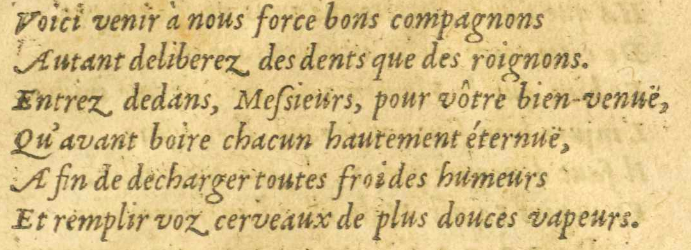
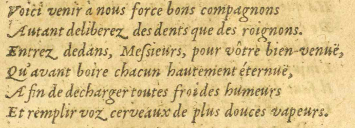
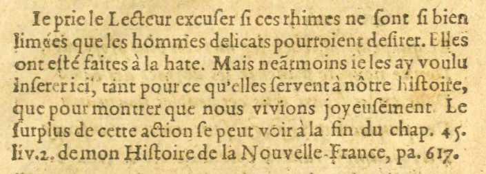
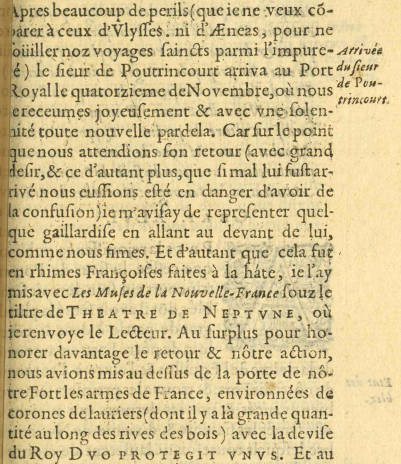

11/11
- Voici venir à nous force#23 bons compagnonsE11 E12 E17 E18 :
- Autant deliberez des dents que des roignons.
- Entrez dedans, Meſssieurs, pour vôtre bien-venuë,
- Qu'avant boire chacun hautement éternuë,
- A finAfin de decharger toutes froides humeurs
- Et remplir voz cerveaux de plus douces vapeurs.
 
IeJe prie le lecteur excuſser ſsi cesE09 E12 : les rhimes ne ſsont ſsi bien
limées que les hommes delicats pourroient deſsirer. Elles
ont eſsté faites à la hate. Mais neãtmoinsneantmoins ieje les ay voulu
inſserer ici, tant pour-ceE09 : pour ce qu'elles ſservent à nôtre HiſstoireE09 : hiſstoire,
que pour montrer que nous vivions joyeuſsement. Le
ſsurplus de cette action ſse peut voir la fin du chap. 45.
liv. 2. de mon Hiſstoire de la Nouvelle France, pa. 617.
